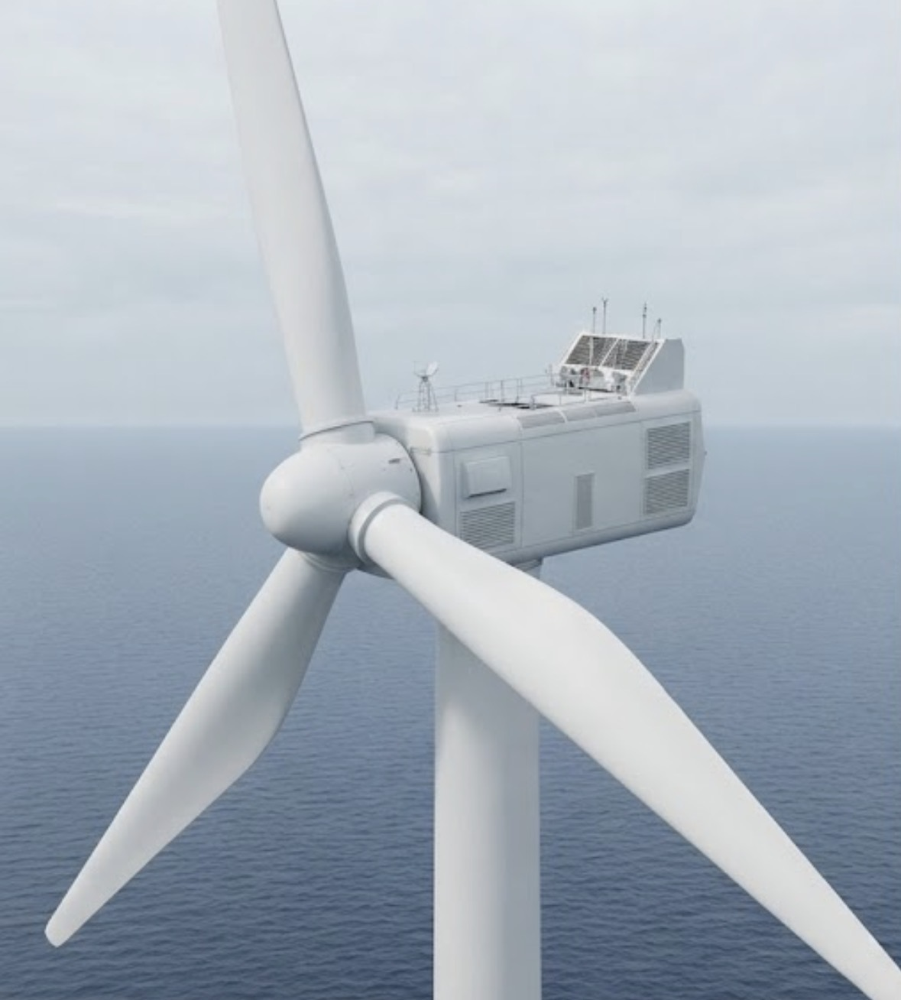

Offshore Wind · Interactive
Scroll to explore what happens inside the nacelle.
01
Everything that turns wind into power is housed behind this shell. Keep scrolling to open it up.
Nacelle opening…
02
Select a component to explore.
Reduced motion is enabled, so the disassembly plays as a simple video instead of a scroll animation.
Recap
You've explored the main systems inside the nacelle.
Component